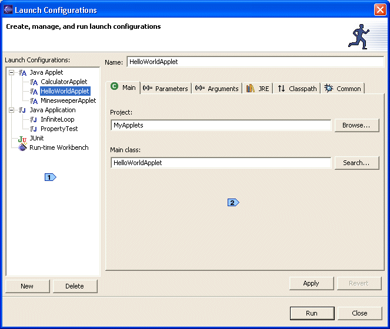
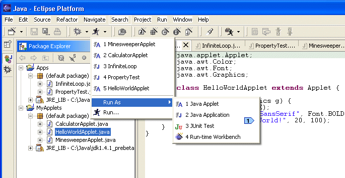

| Eclipse Corner Article |

Summary
The ability to launch (run or debug) code under development is fundamental to an IDE. But because Eclipse is more of a tools platform than a tool itself, Eclipse's launching capabilities depend entirely on the current set of installed plug-ins. This article describes the API available to build launching plug-ins and works through developing an example launcher using this API.By Joe Szurszewski, IBM OTI Labs
January 8, 2003
plugin.xml
files. In addition, some knowledge of Java and Java terminology (VM, classpath,
etc.) is helpful, though not necessary.
For purposes of this article, launching is defined as running or debugging a program from within Eclipse, and a launcher is a set of Java classes that live in an Eclipse plug-in that performs launching. As with most things in Eclipse, there is no 'built-in' launching functionality. The base Eclipse workbench can't launch a thing. It is only through plug-ins that Eclipse gains the ability to launch. The Eclipse SDK does ship with a set of useful launchers for launching local Java applications & Java applets, connecting to remote Java applications, launching JUnit test suites and starting an Eclipse workbench, but if none of these satisfy your needs and you can't find a plug-in someone else has written to do the job, you will need to write your own launcher.
Prior to 2.0, launching in Eclipse was somewhat inflexible and decentralized. For these reasons and many others, the launching framework was overhauled for 2.0. The primary issues addressed were:
The downside of all these improvements is that there is no backward compatibility. Eclipse 1.0 plug-ins that do launching will have to be reworked for 2.0. However, such conversions are relatively painless, and should result in much improved functionality.
If you've decided to write your own launcher, you're in luck. Eclipse 2.0 plug-in developers have a rich API at their disposal to build plug-ins with launching behavior. In 2.0, launching is centered around two main entities, LaunchConfigurations and LaunchConfigurationTypes. At the simplest level, LaunchConfigurationTypes are cookie cutters, and LaunchConfigurations are the cookies made from these cookie cutters. When you as a plug-in developer decide to create a launcher, what you are really doing is creating a specific kind of cookie cutter that will allow your users to stamp out as many cookies as they need. In slightly more technical terms, a LaunchConfigurationType (henceforth, a 'config type') is an entity that knows how to launch certain types of launch configurations, and determines what the user-specifiable parameters to such a launch may be. Launch configurations (henceforth, 'configs') are entities that contain all information necessary to perform a specific launch. For example, a config to launch a HelloWorld Java application would contain the name of the main class ('HelloWorld'), the JRE to use (JDK1.4.1, for example), any program or VM arguments, the classpath to use and so on. When a config is said to be 'of type local Java Application', this means that the local Java application cookie cutter was used to make this config and that only this config type knows how to make sense of this config and how to launch it.
Plug-in developers don't need to directly concern themselves with the launch
configuration lifecycle. Once you've implemented a config type, the launching
infrastructure contributed by the Debug core plug-in (org.eclipse.debug.core)
takes care of creating and persisting configs on behalf of the config type,
and infrastructure provided by the Debug UI plug-in ( org.eclipse.debug.ui)
provides a dialog to manage configs (the 'LaunchConfigurationDialog'), as well
as other launching-related UI.
However, plug-in developers do need to know how to interact with configs. All
config objects implement the org.eclipse.debug.core.ILaunchConfiguration
interface which defines methods for retrieving information about the config,
but no methods for changing the config. This is because objects implementing
ILaunchConfiguration are immutable and cannot be changed. If you
wish to change a config, you must have a reference to an object that implements
the org.eclipse.debug.core.ILaunchConfigurationWorkingCopy interface.
This interface extends ILaunchConfiguration, but adds methods for
changing the contents of the config. The contents of a config consist of name/value
pairs called 'attributes'. An attribute specifies one discrete piece of information
about a config, for example the JRE to use when launching a Java-oriented config.
By looking at the API defined by ILaunchConfiguration and ILaunchConfigurationWorkingCopy,
you can see that attribute values must be one of 5 types:
java.lang.Stringjava.util.List (all elements must be of type java.lang.String)java.util.Map (all keys & values must be of type java.lang.String)This may seem limiting, but in practice, developers create String
mementos for complex data types and store these.
 When referencing attribute
names in code, you should always use publicly available constants. This allows
other developers to access your attributes.
When referencing attribute
names in code, you should always use publicly available constants. This allows
other developers to access your attributes.
To use the launcher API, your plug-in must make some import declarations in
its plugin.xml file. If your plug-in declares a config type, it
must import org.eclipse.debug.core, and if your plug-in
declares anything related to launching UI, it must import org.eclipse.debug.ui.
In general, it is recommended that the UI and non-UI aspects of your launcher
be handled by two different plug-ins. Note that it is not required for
a launcher to have any associated UI. In this case, the launcher can
only be used programmatically from within code, not by a user (see the forthcoming
related article "How to Launch Java Applications Programmatically"
by Darin Wright). Even if your launcher has an associated UI, there may be times
when you or someone else wants to use your launcher programmatically. Without
a clean separation between UI & non-UI code, a plug-in wishing to use your
launcher programmatically would have to import the standard UI plug-ins, which
may be inconvenient, inefficient or impossible.
The rest of this article is concerned with developing a launcher for Java applets.
This launcher is actually part of the Eclipse SDK (as of version 2.1), so all
of the source code presented here can be viewed by downloading the SDK. The
non-UI parts of this launcher live in the org.eclipse.jdt.launching
plug-in, and the UI parts are contained in the org.eclipse.jdt.debug.ui
plug-in. Each XML declaration that follows is marked as being UI or non-UI in
nature. This is to help you separate out the UI components in launchers you
create.
The first step in creating our applet launcher is declaring a
config type, as shown in the following snippet of XML from our
plug-in's plugin.xml file:
<extension point="org.eclipse.debug.core.launchConfigurationTypes">
<launchConfigurationType
name="Java Applet"
delegate="org.eclipse.jdt.internal.launching.JavaAppletLaunchConfigurationDelegate"
modes="run, debug"
id="org.eclipse.jdt.launching.javaApplet">
</launchConfigurationType>
</extension>
The most important part of this declaration is the
delegate attribute which specifies the
fully-qualified name of a class that implements the interface
org.eclipse.debug.core.model.ILaunchConfigurationDelegate.
The delegate is the brains of the launcher, and implements the
launch() method which launches a specified
config.
The modes attribute specifies one or both of run
& debug. The debug infrastructure only supports these two modes
of launching, and to be useful, your config type must support at least one of
these. Among other things, this value tells the workbench where configs of your
type may appear in the UI. For example, if the launch configuration dialog is
opened in run mode, but your config type is for debug mode only, then your config
type and any associated configs will not appear. Note that if your config type
declares both modes, it is your delegate's responsibility in the launch()
method to handle both modes.
An optional attribute not present in the above declaration is private.
This is a boolean attribute that indicates whether the config type should appear
in the UI, if there is one. Setting this attribute to true effectively
makes your launcher usable for programmatic launching only. The default value,
if this attribute is omitted, is false.
Another optional attribute not shown above is category. This string-valued
attribute will be discussed later in the section on launch groups.
|
Source: org.eclipse.jdt.internal.launching.JavaAppletLaunchConfigurationDelegate |
As noted above, the work of implementing a config type boils down to creating
a delegate class that implements the interface org.eclipse.debug.core.ILaunchConfigurationDelegate.
The only method on this interface is:
public void launch(ILaunchConfiguration configuration,
String mode,
ILaunch launch,
IProgressMonitor monitor) throws CoreException;
The first argument, configuration, is the most important. This
specifies the config to be launched. The Debug UI framework ensures that your
delegate is never asked to launch a config of the wrong type, however there
is no such guarantee for programmatic launching, so you may want to verify the
type of the config argument. In simple terms, the job of the launch()
method is to extract all of the pertinent information from this config and then
act upon it. For our applet launcher, this information includes things such
as the name of the Applet class, the JRE to use, the width & height of the
applet panel viewing area, the classpath to use and so on. Once this information
has been extracted from the config and checked for validity, it is used to first
generate an HTML file and then to launch an instance of the appletviewer
utility on this HTML file.
The mode attribute has a value of either ' run'
or ' debug ' . Once again, the Debug UI framework makes sure your
delegate is not asked to launch in a mode it can't handle, but with programmatic
launching, any developer can ask your delegate to do anything, so some sanity
checking is a good idea.
 When specifying a launch
mode in code, you should never use a hard-coded
When specifying a launch
mode in code, you should never use a hard-coded String. Instead,
use one of the constants defined in org.eclipse.debug.core.ILaunchManager.
The third argument, launch, is the top-level debug model artifact
that represents a launch. This object is created before the launch()
method is called. The delegate's responsibility with respect to this argument
is to add the debug targets and/or processes that result from launching to it.
In our applet launcher, this is done inside the IVMRunner.run()
call.
The last argument, monitor, is the progress monitor you should
update during any long-running operations you perform. In addition, you should
periodically check this monitor to see if the user has requested that the launch
be canceled. This can be done via monitor.isCanceled(). Doing this
allows your users the chance to change their minds, which makes your launcher
much friendlier. Note that monitor may be null (for
example, during a programmatic launch).
The implementation of the launch() method for our applet launcher
delegate is made easier by that fact that the delegate extends org.eclipse.jdt.launching.AbstractJavaLaunchConfigurationDelegate.
This class provides common functionality that most Java-oriented launchers will
need. For example, it has methods to retrieve and verify Java-related config
attributes such as the main type, classpath, bootpath and VM. In addition, our
applet launcher takes advantage of some Java launching infrastructure in the
form of org.eclipse.jdt.launching.IVMRunner. The VMRunner's job
is simply to build a command line to launch the Java program, call Runtime.exec()
on this command line and add the resulting debug targets/processes to the ILaunch
object. The reason IVMRunner is an interface with several implementors
is that each VM type (1.1.x, 1.3/1.4, J9, etc.) has its own idiosyncrasies.
Also, there are different VMRunners for run & debug modes.
 If you are writing a
launcher that fires up a JVM, you should seriously consider making your delegate
extend
If you are writing a
launcher that fires up a JVM, you should seriously consider making your delegate
extend AbstractJavaLaunchConfigurationDelegate. Also, you should
take advantage of the IVMRunner infrastructure as much as possible.
The following code fragment is taken from the beginning of the launch()
method of JavaAppletLaunchConfigurationDelegate:
String mainTypeName = verifyMainTypeName(configuration); IJavaProject javaProject = getJavaProject(configuration);
IType type = JavaLaunchConfigurationUtils.getMainType( mainTypeName, javaProject); ITypeHierarchy hierarchy = type.newSupertypeHierarchy( new NullProgressMonitor()); IType javaLangApplet = JavaLaunchConfigurationUtils.getMainType( "java.applet.Applet", javaProject);
if (!hierarchy.contains(javaLangApplet)) { abort("The applet type is not a subclass of java.applet.Applet."); }
IVMInstall vm = verifyVMInstall(configuration);
IVMRunner runner = vm.getVMRunner(mode);
This code snippet is typical of the verification done by the launch()
method:
 Use a framework method to
verify & return the name of the 'main type', which in our case is the class
that extends
Use a framework method to
verify & return the name of the 'main type', which in our case is the class
that extends java.applet.Applet.
 Use a utility method to
return the
Use a utility method to
return the org.eclipse.jdt.core.IType object for the Applet class.
 Make sure that the specified
applet class really does extend
Make sure that the specified
applet class really does extend java.applet.Applet.
 Verify & return the
Verify & return the
org.eclipse.jdt.launching.IVMInstall object that corresponds to
the JRE specified in the configuration.
 Ask the installed VM for
a VMRunner appropriate to the specified mode.
Ask the installed VM for
a VMRunner appropriate to the specified mode.
Further along in the launch() method is this snippet of code:
// Create VM config
// Bootpath String[] bootpath = getBootpath(configuration);
This is the code that actually performs the launch:
 Create a
Create a VMRunnerConfiguration,
which is just a convenience holder of various launch parameters. Notice the
program being launched is the appletviewer utility.
 Resolve the VM arguments
and set them on the VMRunnerConfiguration.
Resolve the VM arguments
and set them on the VMRunnerConfiguration.
 Set the Java bootpath on
the VMRunnerConfiguration.
Set the Java bootpath on
the VMRunnerConfiguration.
 Ask the VMRunner to launch.
All information necessary to perform the launch is now contained in
Ask the VMRunner to launch.
All information necessary to perform the launch is now contained in runConfig.
This method call will result in building a command line and passing it to Runtime.exec().
If the launch mode was 'run', the resulting process is registered with the debug
infrastructure. If the launch mode was 'debug', the resulting process is used
to create a 'debug target', which is also registered.
On a Win32 machine, the command line built by the VMRunner to run a HelloWorld applet with our applet launcher might look like:
C:\Java\jdk1.4.1\bin\javaw.exe
-Djava.security.policy=java.policy.applet
-classpath C:\TargetWorkspaces\eclipse\MyApplets
sun.applet.AppletViewer HelloWorldApplet1030633365864.html
Debugging the same applet would result in the following command line:
C:\Java\jdk1.4.1\bin\javaw.exe
-Djava.security.policy=java.policy.applet
-classpath C:\TargetWorkspaces\eclipse\MyApplets
-Xdebug -Xnoagent
-Djava.compiler=NONE
-Xrunjdwp:transport=dt_socket,suspend=y,address=localhost:14983
sun.applet.AppletViewer HelloWorldApplet1030634748522.html
 You can always see the
command line used to initiate a launch by right-clicking the resulting process
in the Debug View and selecting Properties. This is useful for debugging your
delegate.
You can always see the
command line used to initiate a launch by right-clicking the resulting process
in the Debug View and selecting Properties. This is useful for debugging your
delegate.
To summarize, implementing a config type (Java or otherwise) means implementing
the launch() method on your launch configuration delegate. This
method has 2 main tasks to perform:
Runtime.exec() Note that the first task may sometimes not involve calling Runtime.exec().
For example, the Remote Java Debug delegate does not need to execute anything
in the OS because the program to be debugged is already running (possibly on
another machine). In general though, if your delegate is launching something
under development in the Eclipse workspace, you will probably want to use Runtime.exec().
Now that we have a declared and implemented a config type, the next step is to flesh out the various UI elements associated with the config type. First up is an icon for the applet config type:
<extension point="org.eclipse.debug.ui.launchConfigurationTypeImages">
<launchConfigurationTypeImage
icon="icons/full/ctool16/java_applet.gif"
configTypeID="org.eclipse.jdt.launching.javaApplet"
id="org.eclipse.jdt.debug.ui.launchConfigurationTypeImage.javaApplet">
</launchConfigurationTypeImage>
</extension>
Note that the id attribute is just a unique identifier, whereas
the configTypeID attribute should have the same value as the id
attribute for our config type declaration. Notice that the icon is declared
via a separate extension point instead of just being an attribute on the config
type declaration. This is in keeping with the goal of not forcing launcher contributors
to provide a UI.
There is no code to write when implementing a config type icon, you simply need to create the icon. The icon should be 16x16, contain no more than 256 colors, and have a transparent background.
The most important piece of UI to consider when developing a new launcher is the 'tab group'. To understand how tab groups work, we need a little background on the LaunchConfigurationDialog provided by the Debug UI plug-in. This dialog (henceforth known as the 'LCD') is a central point for creating, managing, deleting and launching configs of any config type. If you have used any 2.0 or later version of Eclipse, you have probably seen the LCD:

The LCD is broken into two main regions:
 The config tree shows
all configs currently defined in the workspace, grouped by config type.
The config tree shows
all configs currently defined in the workspace, grouped by config type.
 The tabbed
folder lets users edit attributes of the config currently
selected in the tree. The contents of this tabbed folder are
specified when you declare a tab group.
The tabbed
folder lets users edit attributes of the config currently
selected in the tree. The contents of this tabbed folder are
specified when you declare a tab group.
The 6 tabs in the above figure show the launching attributes for HelloWorldApplet. These same 6 tabs would appear if either of the other two configs of type JavaApplet were selected, though of course they would show different values. If InfiniteLoop were selected, it would show a different set of tabs because this config is of a different config type. When you declare a tab group, you are telling the LCD to use the tabs specified in your tab group for configs of your config type. This makes perfect sense because if your config type requires width & height attributes (for example) in order to launch properly, the only way to get values for these attributes is via a set of tabs that appear when a config of your type is selected in the LCD. Another way to look at this is that if your config type requires some attribute X in order to function, then somewhere on a tab specified in your tab group, there better be some UI widget that collects a value for X.
Here is the XML for declaring a tab group:
<extension point="org.eclipse.debug.ui.launchConfigurationTabGroups">
<launchConfigurationTabGroup
type="org.eclipse.jdt.launching.javaApplet"
class="org.eclipse.jdt.internal.debug.ui.launcher.JavaAppletTabGroup"
id="org.eclipse.jdt.debug.ui.launchConfigurationTabGroup.javaApplet">
</launchConfigurationTabGroup>
</extension>
All that this declaration really does is associate a tab group implementation
(a class that implements the interface org.eclipse.debug.ui.ILaunchConfigurationTabGroup)
with a config type. Any time a config of the specified type is selected in the
LCD, the class named by the class attribute will be used to provide
the content of the tabbed folder.
|
Source: org.eclipse.jdt.internal.debug.ui.launcher.JavaAppletTabGroup |
The main job of a tab group is to specify the tabs that will appear in the
LCD and set their order. These tabs may have been specially written for
the particular config type in question, or they may be general purpose
tabs that appear for multiple config types. The tab group for our applet
launcher creates 6 tabs, of which 4 already existed (JavaArgumentsTab,
JavaJRETab, JavaClasspathTab, CommonTab) and 2 which were written
just for our applet launcher (AppletMainTab and AppletParametersTab):
public void createTabs(ILaunchConfigurationDialog dialog, String mode) {
ILaunchConfigurationTab[] tabs = new ILaunchConfigurationTab[] {
new AppletMainTab(),
new AppletParametersTab(),
new JavaArgumentsTab(),
new JavaJRETab(),
new JavaClasspathTab(),
new CommonTab()
};
setTabs(tabs);
}
A tab group is free to mix & match any combination of existing and
custom-written tabs. The only proviso is that tabs you wish to reuse must
be in public (not internal) packages. In the simplest case, all
of the tabs would be preexisting tabs and the work of providing a UI for our
config type in the LCD would be done once we had defined a class similar
to JavaAppletTabGroup.
 If you are
implementing a tab group for a Java-oriented config type, you should consider
reusing some or all of the Java tabs in the
If you are
implementing a tab group for a Java-oriented config type, you should consider
reusing some or all of the Java tabs in the org.eclipse.jdt.debug.ui.launchConfigurations
package.
 All
tab groups should include
All
tab groups should include org.eclipse.debug.ui.CommonTab. This
tab contains UI that allows users to make their configs 'local' or 'shared',
mark configs as 'favorites' and control perspective switching when launching.
By convention, this tab is the last tab in the tab group.
If you decide that you need to write one or more of your own tabs, you need
to understand the tab lifecycle defined by org.eclipse.debug.ui.ILaunchConfigurationTab,
an interface which all tabs must implement. There is a convenience abstract
class, org.eclipse.debug.ui.AbstractLaunchConfigurationTab that
implements this interface and provides useful implementations of many of its
methods. Whenever possible, you should extend this abstract class.
The first two events in a tab's life cycle are calls to setLaunchConfigurationDialog(ILaunchConfigurationDialog)and
createControl() in that order. The first simply notifies the
tab of the LCD object that owns it. Tabs make frequent calls to methods on the
LCD, so a tab needs to have a reference to it. The second method
creates the GUI widgetry for the tab and lays it out.
| Source: org.eclipse.jdt.debug.ui.launchConfigurations.AppletParametersTab |
To illustrate the rest of the methods on ILaunchConfigurationTab,
the AppletParametersTab implementation will be discussed. This
class makes three field declarations you need to be aware of:
private Text widthText;private Text heightText;private Text nameText;
where Text is the SWT text-field widget.
The three most important methods on a tab are the following 'value copying' methods:
public void setDefaults(ILaunchConfigurationWorkingCopy configuration);public void performApply(ILaunchConfigurationWorkingCopy configuration);public void initializeFrom(ILaunchConfiguration configuration);In general terms, the first two methods copy values from the tab to a
working copy, while the third method copies values from a working
copy to the tab. The setDefaults() method is called
when a new config is created. This method sets default values
for all attributes it understands on the working copy argument. This is
done differently depending on the nature of the attributes collected by the
tab. The AppletMainTab checks the current workbench selection
or active editor to determine default values for the Project & Applet class
attributes. The CommonTab sets hard-coded defaults, and the
JavaJRETab sets the default JRE to be the JRE marked as the workbench
default in the Java preferences.
The performApply() method reads current values from the GUI widgets
on the tab and sets the corresponding attribute values on the working copy argument:
public void performApply(ILaunchConfigurationWorkingCopy configuration) {
configuration.setAttribute(
IJavaLaunchConfigurationConstants.ATTR_APPLET_WIDTH,
(String)widthText.getText());
configuration.setAttribute(
IJavaLaunchConfigurationConstants.ATTR_APPLET_HEIGHT,
(String)heightText.getText());
configuration.setAttribute(
IJavaLaunchConfigurationConstants.ATTR_APPLET_NAME,
(String)nameText.getText());
configuration.setAttribute(
IJavaLaunchConfigurationConstants.ATTR_APPLET_PARAMETERS,
getMapFromParametersTable());
}
The initializeFrom() method does the opposite of the performApply()
method. It reads attribute values out of the config argument, and sets
these values in the corresponding GUI widgets:
public void initializeFrom(ILaunchConfiguration config) {
try {
fWidthText.setText(Integer.toString(config.getAttribute(
IJavaLaunchConfigurationConstants.ATTR_APPLET_WIDTH, "200")));
} catch(CoreException ce) {
fWidthText.setText(Integer.toString(DEFAULT_APPLET_WIDTH));
}
try {
fHeightText.setText(Integer.toString(config.getAttribute(
IJavaLaunchConfigurationConstants.ATTR_APPLET_HEIGHT, "200")));
} catch(CoreException CE) {
fHeightText.setText(Integer.toString(DEFAULT_APPLET_HEIGHT));
}
try {
fNameText.setText(config.getAttribute(
IJavaLaunchConfigurationConstants.ATTR_APPLET_NAME, ""));
} catch(CoreException CE) {
fNameText.setText("");
}
updateParametersFromConfig(config);
}
 Extract the value of the
width attribute from the config and put it in the corresponding
Extract the value of the
width attribute from the config and put it in the corresponding Text
widget.
 Extract the value of the
height attribute from the config and put it in the corresponding
Extract the value of the
height attribute from the config and put it in the corresponding Text
widget.
 Extract the value of the
name attribute from the config and put it in the corresponding
Extract the value of the
name attribute from the config and put it in the corresponding Text
widget.
In all cases, if there is an error retrieving the attribute value, the Text
widget is filled with a default value.
Both performApply() and initializeFrom() are called
frequently, for example, whenever the user selects a new tab. Thus, they
should not perform long-running operations.
The remaining methods on ILaunchConfigurationTab are also fairly
straightforward. The isValid(ILaunchConfiguration) method returns
true if all of the attributes in the tab currently have values
that permit launching, within the context of the specified config:
public boolean isValid(ILaunchConfiguration launchConfig) {
setErrorMessage(null);
try {
Integer.parseInt(fWidthText.getText().trim());
} catch(NumberFormatException nfe) {
setErrorMessage("Width is not an integer");
return false;
}
try {
Integer.parseInt(fHeightText.getText()Trim());
} catch(NumberFormatException nfe) {
setErrorMessage("Height is not an integer");
return false;
}
return true;
}
 The config can be launched
only when both the
The config can be launched
only when both the width & height attributes have
valid integer values.
 The appropriate response
to a validation failure is calling
The appropriate response
to a validation failure is calling AbstractLaunchConfigurationTab.setErrorMessage(String)
with a description of the failure and returning false.
 The other attribute values
this tab is responsible for cannot be checked for validity, so at this point
we declare the tab valid.
The other attribute values
this tab is responsible for cannot be checked for validity, so at this point
we declare the tab valid.
The canSave() method is similar to isValid(), and
returns true if all of the attributes in the tab have values that
permit saving.
 If you implement
your own tab, consider making it public API so that others can reuse it.
If you implement
your own tab, consider making it public API so that others can reuse it.
If you compare the API on ILaunchConfigurationTabGroup and ILaunchConfiguration,
you will see a number of similarities. In particular, the following methods
are common:
public void initializeFrom(ILaunchConfiguration configuration);
public void performApply(ILaunchConfigurationWorkingCopy configuration);
public void setDefaults(ILaunchConfigurationWorkingCopy configuration);
public void launched(ILaunch launch);
You will recognize the 3 'value copying' lifecycle methods for tabs, along
with launched(ILaunch) which is simply a callback that happens
when a successful launch has occurred. In most cases, the tab group is not interested
in these calls and simply forwards them on to its tabs. When this is true, you
should make your tab group extend org.eclipse.debug.ui.AbstractLaunchConfigurationTabGroup.
This abstract class implements these 4 methods to simply loop through all owned
tabs and make the corresponding call on each. The applet launcher tab group
extends this abstract class. However, there are situations when you might want
to implement some of these methods at the tab group level. Suppose you are reusing
someone else's tab that specifies a default value for an attribute you don't
like. You can change this default value and still reuse the tab by implementing
the setDefaults() method on your tab group to first call setDefaults()
on the tab in question (which sets the undesirable default value), then directly
set the attribute in question to the value you prefer. In this way, you 'override'
the one value you care about, while leaving the others as specified in the tab.
As useful as the LCD is, there are many times when users don't want to bother with it. They simply want to launch a program. This is where 'launch shortcuts' come in. A launch shortcut allows users to identify a resource in the workbench (either via selection or the active editor) and launch that resource with a single click without bringing up the LCD. Launch shortcuts are not useful when a user needs to tweak launch configuration attributes because the user gets no chance to set these. Launch shortcuts are useful when the user is happy with default values for all config attributes and wants to launch in a hurry.
The following figure shows how launch shortcuts appear in the UI:

 The 'Run As' sub-menu
of the 'Run' drop-down menu shows all config types that have registered a launch
shortcut in the current perspective. Selecting one of the 'Run As' sub-menu
choices activates the corresponding launch shortcut.
The 'Run As' sub-menu
of the 'Run' drop-down menu shows all config types that have registered a launch
shortcut in the current perspective. Selecting one of the 'Run As' sub-menu
choices activates the corresponding launch shortcut.
This is the XML to declare the applet launch shortcut:
<extension point="org.eclipse.debug.ui.launchShortcuts">
<shortcut
id="org.eclipse.jdt.debug.ui.javaAppletShortcut"
class="org.eclipse.jdt.internal.debug.ui.launcher.JavaAppletLaunchShortcut"
label="Java Applet"
icon="icons/full/ctool16/java_applet.gif"
modes="run, debug">
<perspective id="org.eclipse.jdt.ui.JavaPerspective"/>
<perspective id="org.eclipse.jdt.ui.JavaHierarchyPerspective"/>
<perspective id="org.eclipse.jdt.ui.JavaBrowsingPerspective"/>
<perspective id="org.eclipse.debug.ui.DebugPerspective"/>
</shortcut>
</extension>
Though the screenshot showed only the 'Run' shortcuts, launch shortcuts apply
equally to both modes. The modes attribute specifies which of the
drop-down menus include the shortcut. In addition to being mode sensitive, launch
shortcuts can also be configured to only appear in certain perspectives. The
perspective sub-elements list each perspective in which the shortcut
will be available. Only those perspectives that make sense for a particular
shortcut should be specified. For example, specifying a C++ perspective for
the Java applet launcher wouldn't be generally useful. Following this rule of
thumb leads to better UI scalability.
|
Source: org.eclipse.jdt.internal.debug.ui.launcher.JavaAppletLaunchShortcut |
The first step in implementing a launch shortcut is determining if you even need to. Launch shortcuts are strictly conveniences that make user's lives easier by allowing them to create a config, set all attributes to default values and launch that config in a single mouse click. If you don't provide a shortcut for your config type, users can always bring up the LCD 'manually', create a config of the desired type and launch it.
 There are two ways to
bring up the LCD: (1) Choose Run... or Debug... from the drop-down menus to
bring up the LCD on the last launched config or (2) As of 2.1, you can Ctrl
click a favorite or history item in the drop-down menus to bring up the LCD
on the corresponding config.
There are two ways to
bring up the LCD: (1) Choose Run... or Debug... from the drop-down menus to
bring up the LCD on the last launched config or (2) As of 2.1, you can Ctrl
click a favorite or history item in the drop-down menus to bring up the LCD
on the corresponding config.
Launch shortcut classes must implement the org.eclipse.debug.ui.ILaunchShortcut
interface. This interface defines two launch() methods:
public void launch(ISelection selection, String mode); public void launch(IEditorPart editor, String mode); The only difference between them is how the entity to be launched is specified. In the first method, it's via a workbench selection, in the second it's as an editor part. Typically, both of these methods will defer the real work of creating a config and launching it to a helper method once the entity to be launched has been resolved:
public void launch(IEditorPart editor, String mode) {
IEditorInput input = editor.getEditorInput();
IJavaElement javaElement =
(IJavaElement) input.getAdapter(IJavaElement.class);
if (javaElement != null) {
searchAndLaunch(new Object[] {javaElement}, mode);
}
}
public void launch(ISelection selection, String mode) {
if (selection instanceof IStructuredSelection) {
searchAndLaunch(((IStructuredSelection)selection).toArray(), mode);
}
}
protected void searchAndLaunch(Object[] search, String mode) {
IType[] types = null;
if (search != null) {
try {
types = AppletLaunchConfigurationUtils.findApplets(
new ProgressMonitorDialog(getShell()), search);
} catch (Exception e) {
/* Handle exceptions */
}
IType type = null;
if (types.length == 0) {
MessageDialog.openInformation(
getShell(), "Applet Launch", "No applets found."};
} else if (types.length > 1) {
type = chooseType(types, mode);
} else {
type = types[0];
}
if (type != null) {
 launch(type, mode);
}
}
}
protected void launch(IType type, String mode) {
try {
ILaunchConfiguration config = findLaunchConfiguration(type, mode);
if (config != null) {
launch(type, mode);
}
}
}
protected void launch(IType type, String mode) {
try {
ILaunchConfiguration config = findLaunchConfiguration(type, mode);
if (config != null) {
 config.launch(mode, null);
}
} catch (CoreException e) {
/* Handle exceptions*/
}
}
config.launch(mode, null);
}
} catch (CoreException e) {
/* Handle exceptions*/
}
}
 Both
Both launch()
methods from the ILaunchShortcut interface defer the real work
to searchAndLaunch(). Notice that in the first launch()
method, we have to resolve the entity to launch from the editor, whereas in
the second, the selection contains the candidate entities to launch.
 Since there may be more
than one candidate entity to launch, we first filter out any that aren't applets.
Since there may be more
than one candidate entity to launch, we first filter out any that aren't applets.
 We handle the case of no
applets to launch by showing an informational dialog.
We handle the case of no
applets to launch by showing an informational dialog.
 If there is more than one
applet available to launch, ask the user to choose one.
If there is more than one
applet available to launch, ask the user to choose one.
 Otherwise, there's exactly
one applet.
Otherwise, there's exactly
one applet.
 If there's an applet to
launch, do so.
If there's an applet to
launch, do so.
 Launch a config corresponding
to the applet. The
Launch a config corresponding
to the applet. The findLaunchConfiguration() method first attempts
to find an existing config for the applet. Failing this, a new config is created
and returned. Note that the actual launching happens by just calling launch()
on the config.
In most cases, a launch shortcut is maximally useful if it performs the following steps:
However, there is nothing in the ILaunchShortcut interface that
requires you to follow these steps. For example, you could create a launch
shortcut implementation that skipped step 2. This way, every time
the shortcut was invoked, a new config would be created. This would normally lead
to a flood of duplicate configs, however if the default value for an attribute
was somehow time-dependent, this could be useful. Another variation might
be to open the LCD on the newly created config. This might be necessary if some
attribute has no reasonable default value and must be specified by the user.
Note that even in this case, the shortcut saves time and keystrokes by creating
a config and populating most of its attributes with appropriate values. The
user only has to supply the required attribute(s), then click Run or Debug.
In summary, launch shortcuts are optional. If you choose to implement
one, you should consider making it as useful as possible to your users. This
might mean avoiding duplicate configs, or saving as many keystrokes as possible.
In the end though, the ILaunchShortcut contract is very flexible
and just provides a way to insert an action into a particular place in
the UI.
 Most developers writing
launchers will not need to worry about 'launch groups', but they are covered
here for completeness.
Most developers writing
launchers will not need to worry about 'launch groups', but they are covered
here for completeness.
Launch groups (introduced in Eclipse 2.1) are an organizational construct for config types whose primary purpose is to provide a way to filter configs & configs types in the UI. Standard UI components supplied by the launching framework such as the LCD are set up to always filter their contents with a single active launch group. In addition, the workbench tracks separate launch histories for each launch group. The Eclipse SDK provides two default launch groups, a standard 'Run' launch group and a standard 'Debug' launch group. When you open the LCD by choosing 'Debug...' from the debug drop-down menu, you are actually asking the LCD to open and display only configs that satisfy the filtering criteria specified by the standard 'Debug' launch group.
The filtering criteria of a launch group are specified in two pieces, a mode
attribute (run or debug) and an optional category attribute. Remember
that the config type declaration also included an optional category
attribute. The purpose of this attribute is now clear - it serves to associate
config types with launch groups. If a launch group specifies a value for its
category attribute, then only config types that specify the same
value for their category attributes are considered to belong to
that launch group. The mode attribute serves to further refine
which configs & config types belong to a specific launch group. Recall that
config types declare their support for one or both of the allowable modes, run
and debug. A launch group must specify exactly one of these modes in its declaration.
We can now specify the complete filtering algorithm used to apply launch groups
to UI elements such as the LCD:
This is the XML declaration of the standard 'Run' & 'Debug' launch groups:
<extension point = "org.eclipse.debug.ui.launchGroups"> <launchGroup id = "org.eclipse.debug.ui.launchGroup.debug" mode = "debug" label ="Debug" image = "icons/full/ctool16/debug_exc.gif" bannerImage = "icons/full/wizban/debug_wiz.gif"> </launchGroup> <launchGroup id = "org.eclipse.debug.ui.launchGroup.run" mode = "run" label = "Run" image = "icons/full/ctool16/run_exc.gif" bannerImage = "icons/full/wizban/run_wiz.gif"> </launchGroup> </extension>
Notice that neither declaration specifies a category. This means
that only config types that also do not specify a category attribute will be
visible when one of these launch groups is active in the UI. All of the standard
launchers included in the SDK fall into this category: Java Application, Java
Applet, Remote Java Application, JUnit & Run-time Workbench.
The rest of the available options for a launch group declaration are straightforward.
The id, as always, is merely a unique identifier for the launch
group, label is a human-readable description of the launch group,
and image and bannerImage are a 16x16 icon and a larger
image suitable for placing at the top of a wizard or dialog. Not shown above
is an optional public attribute that controls whether the launch
group's history is editable by the user in the workbench Debug preferences.
The default value if this attribute is not specified is true.
Given that the standard toolbar drop down actions always open the LCD with one of the two default launch groups active, you might wonder about the usefulness of launch groups. In other words, if all of the standard SDK launchers belong to the empty category, and the LCD always opens on either the empty debug or empty run launch group, what is the point? The answer is that unless you are trying to use the launch config framework in new and clever ways, launch groups aren't of much interest. However, if you want to use the launch config framework to do things other than launch code under development, launch groups can be useful.
As an example of a useful application of launch groups, we will look at the external tools plug-ins. The purpose of the external tools plug-ins is to allow developers to run things other than the code they are currently developing. Sometimes these programs are tangential to the development process, such as an MP3 player or a mail client. Other times, developers might want to launch Ant scripts that build or deploy projects. This type of launching is different from the launching discussed so far in this article, but it does have many similarities. Because of the similarities, the launch config framework was used as the basis of the launching-related pieces of the external tools plug-ins.
Below is the declaration of two launch groups associated with external tools:
<extension point = "org.eclipse.debug.ui.launchGroups"> <launchGroup id = "org.eclipse.ui.externaltools.launchGroup" mode = "run" category = "org.eclipse.ui.externaltools" label = "&External Tools" image = "icons/full/obj16/external_tools.gif" bannerImage = "icons/full/wizban/ext_tools_wiz.gif"> </launchGroup> <launchGroup id = "org.eclipse.ui.externaltools.launchGroup.builder" mode = "run" category = "org.eclipse.ui.externaltools.builder" label = "&External Tools" image = "icons/full/obj16/external_tools.gif" bannerImage = "icons/full/wizban/ext_tools_wiz.gif" public = "false"> </launchGroup> </extension>
Notice that each launch group specifies its own category. This
is so that UI components don't display 'regular' external tool configs and 'builder'
external tool configs at the same time. It also means that there are two different
launch histories for these configs (though the 'builder' history is not public
so it does not appear in the Debug preferences). In addition, this means that
the external tools plug-ins are free to create launch configs as they see fit,
without fear that these configs might show up in the LCD when the user is trying
to run code they are developing. Finally, this means that the external tools
plug-ins can implement their own relaunching actions and not worry about accidentally
launching a program under development.
Implementing a launch group does not require implementing any API. A launch group exists simply as an XML declaration with no associated classes. However, there is some launch group-related API you should be aware of. This API allows developers to bring up the LCD with a specified launch group actively filtering its contents. It is worth repeating that this is not something most launcher developers need to worry about. It is only useful if you have a need to show configs of a specific config type and mode separately from all other configs.
The DebugUITools class defines the following two launch group-related
methods:
Both of these methods are used to bring up UI components subject to filtering
provided by the specified launch group. In both cases, groupIdentifier
is the value of the id attribute in a launch group XML declaration,
and shell is just the SWT Shell that will be the parent of the
new UI component.
ILaunchConfigurationTypes and ILaunchConfigurations.
One other related method on DebugUITools is:
public static int openLaunchConfigurationDialog( Shell shell, IStructuredSelection selection, String mode);
This method opens the LCD much as method  did above, except that the launch group used for filtering is based on the value
of
did above, except that the launch group used for filtering is based on the value
of mode. If mode is 'debug', the LCD
is opened on the empty 'Debug' launch group, otherwise it is opened on the empty
'Run' launch group. This can be useful even if you aren't defining launch groups,
since it allows developers to pop up the LCD with an arbitrary selection.
To summarize, most launcher developers will never need to concern themselves with launch groups. They are a technique for filtering configs and config types in the UI that is hidden from the user, in other words, the user has no way to control which launch group is active in the UI. Launch groups are useful when a developer uses the launch configuration framework to do something other than write a launcher that launches user code under development.
The following discussion of launch configuration comparators is somewhat more advanced than the previous sections, and the implementation example requires a bit more knowledge of Java and the Eclipse JDT plug-ins (however launch configuration comparators are not Java-specific and can be implemented for any debug model). Launch configuration comparators are an entirely optional feature of launchers, so this section and the following section on implementation can be safely skipped.
Because all attributes on a config are defined by the developer, the Debug
core & Debug UI infrastructures have no knowledge of attribute semantics.
They know only that there is a String-valued attribute named JRE,
not that this String is a memento that specifies the installed name and type
of the JRE. This gets to be a problem when the debug infrastructure needs to
perform comparisons with configs, for example, determine if two config objects
actually represent the same underlying configuration, or in the LCD, determine
if a config has been modified by the user. Without help from the developer,
the best the infrastructure can do is call Object.equals(Object)
on attribute values (or use == for primitive types). This may be
fine for some attributes, but you can imagine situations in which this would
be incorrect. For example, suppose your tab group collects a list of Strings
as an attribute value, and suppose that order is not significant. Left to its
own devices, the Debug infrastructure would determine that two configs containing
the same list of Strings in their attribute values but in different orders,
were not equal. The solution to this problem lies in declaring a launch configuration
comparator. This is an entity that the Debug infrastructure will use to perform
all comparisons for attributes with a specified name. The Java Applet launcher
doesn't declare any comparators, but the standard Java Application launcher
does:
Non-UI declaration
<extension point="org.eclipse.debug.core.launchConfigurationComparators"> <launchConfigurationComparator id="org.eclipse.jdt.launching.classpathComparator" class="org.eclipse.jdt.internal.launching.RuntimeClasspathEntryListComparator" attribute="org.eclipse.jdt.launching.CLASSPATH"/> </extension>
This declaration tells the Debug infrastructure to use the class RuntimeClasspathEntryListComparator
any time it performs a comparison involving an attribute named "org.eclipse.jdt.launching.CLASSPATH".
Note that this comparator will be used for all attributes with this name,
regardless of config type. This allows you to reuse comparators that have already
been implemented by other developers, but requires caution in attribute naming.
 When creating names for
config attributes, you should always prefix them with the fully qualified name
of your plug-in. This avoids potential collisions down the road if someone else
extends your launcher. It also avoids unintentionally using someone else's comparator.
When creating names for
config attributes, you should always prefix them with the fully qualified name
of your plug-in. This avoids potential collisions down the road if someone else
extends your launcher. It also avoids unintentionally using someone else's comparator.
|
Source: org.eclipse.jdt.internal.launching.RuntimeClasspathEntryListComparator |
To implement a launch configuration comparator, you simply need to implement
the standard Java library interface java.util.Comparator. This
interface defines a single method, public int compare(Object o1, Object
o2) that returns a negative value if o1 is less than o2,
zero if o1 equals o2 and a positive value if o1
is greater than o2:
public int compare(Object o1, Object o2) {
List list1 = (List)o1;
List list2 = (List)o2;
if (list1.size() == list2.size()) {
for (int i = 0; i < list1.size(); i++) {
String memento1 = (String)list1.get(i);
String memento2 = (String)list2.get(i);
try {
IRuntimeClasspathEntry entry1 =
JavaRuntime.newRuntimeClasspathEntry(memento1);
IRuntimeClasspathEntry entry2 =
JavaRuntime.newRuntimeClasspathEntry(memento2);
if (!entry1.equals(entry2)) {
return -1;
}
} catch (CoreException e) {
LaunchingPlugin.log(e);
return -1;
}
}
return 0;
}
return -1;
}
 This method simply reconstructs
This method simply reconstructs
IRuntimeClasspathEntry objects from the String mementos
stored in the List arguments, then calls equals(Object)
on these. The implementation of equals() on the IRuntimeClasspathEntry
objects will do an intelligent comparison.
Another use for comparators is disambiguating default values for attributes. Consider an integer-valued attribute named 'address' whose default value is zero. If the debug infrastructure is asked to compare two configs, one of which has an address value of zero, and the other which has no address attribute, it would normally declare these to be not equal. However the absence of an address value should in most cases mean the same thing as a default address value. The solution is to implement a comparator that encapsulates this logic.
 In the LCD, if you select
a config, then without making any changes to it select a different config and
are asked if you wish to save changes, the problem is probably due to a mismatch
between a default attribute value and no attribute value. Implement a comparator
to fix the problem.
In the LCD, if you select
a config, then without making any changes to it select a different config and
are asked if you wish to save changes, the problem is probably due to a mismatch
between a default attribute value and no attribute value. Implement a comparator
to fix the problem.
There are a couple of things to keep in mind while developing a launcher:
The first rule of implementing a launcher is to reuse as much as possible. If you are implementing a Java-oriented launcher, there is a large amount of code that is part of the Eclipse SDK, is public API and ready to be reused. This article has pointed the opportunities for Java-oriented reuse. Non-Java launchers can also take advantage of reuse. For example, consider extending language-independent abstract API classes like:
org.eclipse.debug.ui.AbstractLaunchConfigurationTabGroup org.eclipse.debug.ui.AbstractLaunchConfigurationTab. To get further reuse outside of Java, you need to identify plug-ins that contain code you wish to reuse. Encourage other plug-in developers to make their launching related classes public so that you can reuse them, and consider making your own launching-related classes public for the same reason.
The Java Applet launcher discussed in this article is part of the Eclipse SDK,
as of release 2.1. All UI code for this launcher is found in the org.eclipse.jdt.debug.ui
plug-in, while the non-UI code lives in the org.eclipse.jdt.launching
plug-in.
Special thanks to Olivier Thomann, the author of the original applet launcher plug-in. Also thanks to Vadim Berestetsky, Erich Gamma, Paul Gooderham, Dave Wathen and Darin Wright for reading early drafts of this article and providing feedback and suggestions.